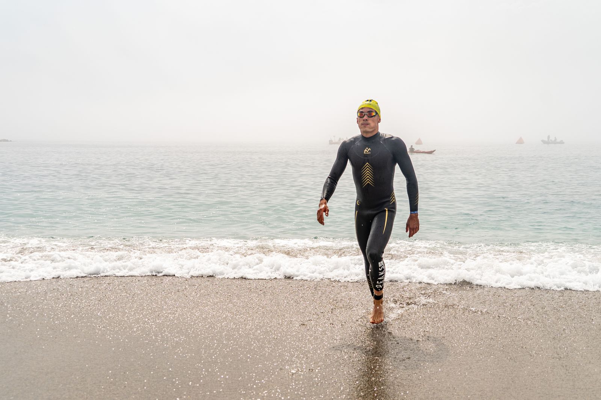
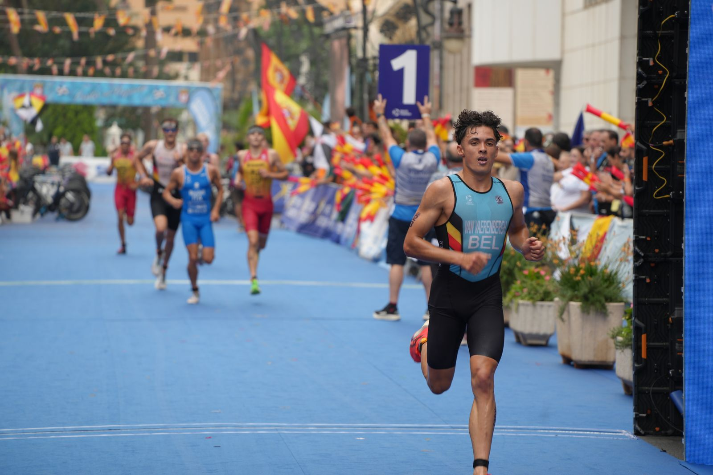

Voor atleten
Vector Endurance
Coaching
Persoonlijke begeleiding in triatlon, duatlon, zwemmen, fietsen en lopen, voor elk niveau. Kies het pakket dat bij jou past.
- Foundation
- Progress
- Peak
- Gratis intake

Races
Neal Van Vaerenbergh
Racing
Mijn verhaal sinds mijn eerste triatlon, al mijn uitslagen en de mooiste beelden van onderweg.
- Mijn verhaal
- Uitslagen
- Foto's